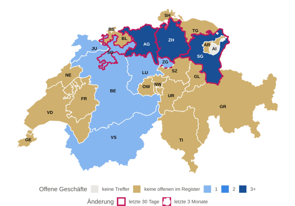

Staat und Religion in den Kantonen
Kantonale Geschäfte zu Kirche und Staat, Kirchensteuer, Schule und Religion, Sterbehilfe, Ruhetagen und Seelsorge
Stand 20.11.2026 · 17 offene Geschäfte in 9 Kantonen

Blau: offene Geschäfte. Sandfarben: frühere oder erledigte Geschäfte zu diesen Themen, zurzeit nichts Offenes im Register. Grau: in den ausgewerteten Quellen kein Geschäft zu diesen Themen gefunden. Roter Rand: Bewegung in den letzten 30 Tagen (durchgezogen) oder 3 Monaten (gestrichelt), zum Beispiel ein neuer Vorstoss, ein Statuswechsel oder eine Abstimmung. Die Tabelle beginnt mit dem Aktuellsten.
Offene Geschäfte
Kürzlich entschieden
Abgeschlossene Geschäfte der letzten sechs Monate.
| Kanton | Thema | Geschäft | Ergebnis | Hinweis | Datum |
|---|---|---|---|---|---|
| ZH | Sterbehilfe | Volksinitiative «Selbstbestimmung am Lebensende auch in Alters- und Pflegeheimen» und Gegenvorschlag | Volksabstimmung vom 27.09.2026: «Patientinnen- und Patientengesetz und Gesundheitsgesetz (Änderung vom 30. März 2026; Gegenvorschlag zur Volksinitiative «Selbstbestimmung am Lebensende auch in Alters- und Pflegeheimen»)» angenommen mit 68,1 % Ja-Stimmen. | Der Kantonsrat empfahl am 30.03.2026 die Initiative zur Ablehnung und beschloss einen Gegenvorschlag; an die Urne kam nur der Gegenvorschlag. | 27.09.2026 |
| SO | Kirchensteuer | Volksauftrag «Kirchensteuer: Opting-Out für juristische Personen» | Im Parlament behandelt am 24.06.2026. Den Ausgang meldet der Kanton nicht in den offenen Daten, siehe Link. | 24.06.2026 |
Änderungen der letzten 30 Tage
● = letzte 7 Tage
Über diese Seite
Die Auswahl der Geschäfte ist eine persönliche Zusammenstellung von Beat Moser. Der Stand der Geschäfte wird jeden Morgen automatisch aus öffentlichen Quellen nachgeführt:
- Parlamentsgeschäfte: OpenParlData.ch
- Vernehmlassungen: Demokratis sowie die Websites der Kantone Freiburg, Neuenburg und Tessin
- Volksabstimmungen: Bundesamt für Statistik, opendata.swiss
Die Stufen (eingereicht, Vernehmlassung, in Beratung, Volksabstimmung, beschlossen, abgelehnt, erledigt) fassen die unterschiedlichen Statusbezeichnungen der Kantone zusammen. Massgebend ist der Status auf der verlinkten Seite des Kantons. Alle Angaben ohne Gewähr.